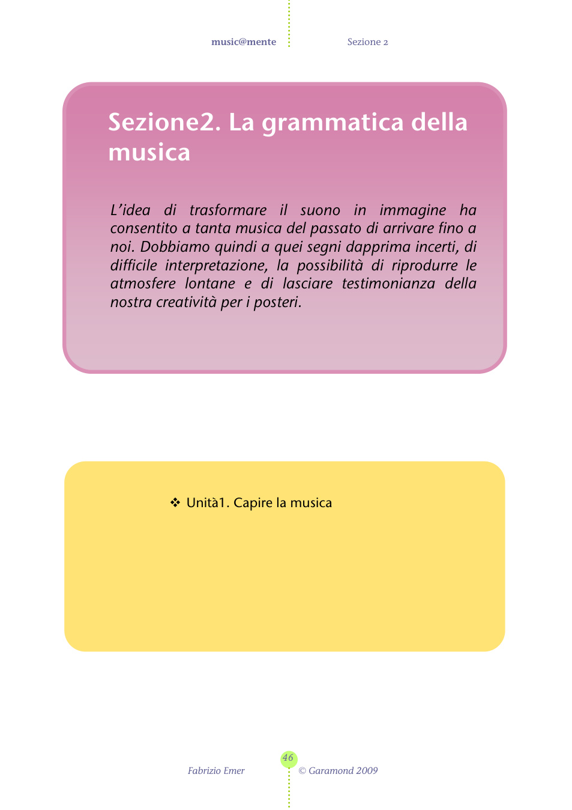

Le aree interattive corrispondono alle icone multimediali originali: fai clic per ascoltare o vedere.
Seleziona un esempio audio
Edizione locale · funziona senza connessione Internet. Per gli esempi MIDI è incluso un sintetizzatore locale.